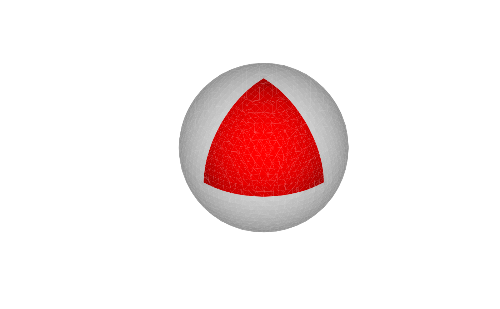

Connects a set of surface waypoints with geodesic paths to form a
closed boundary loop, then splits the mesh into the two regions created by
that loop.
Consecutive waypoints are joined by the geodesic (Dijkstra) shortest
path along the mesh surface; the last waypoint connects back to the
first.
Arguments
- mesh
triangular mesh of class
'mesh3d'.- waypoints
numeric matrix with exactly 3 columns (
x,y,z) and at least 3 rows; each row is a 3-D coordinate defining a boundary corner. After any mesh subdivision, each coordinate is snapped to the nearest vertex in the (possibly refined) mesh. Consecutive snapped vertices are joined by geodesic paths to form the closed boundary loop.- seed_vertex
integer (optional, 1-based). A vertex known to be inside the desired first patch. When
NULL(default) the smaller of the two regions is returned first.- max_edge_length
numeric (optional). When positive and finite, the mesh is refined before patching so that no edge exceeds this length. Global edge subdivision (
vcg_subdivision) is applied repeatedly until the average edge length falls below the threshold (fast), thenvcg_subdivide_max_edge_lengthhandles any remaining outlier edges.Waypointcoordinates are snapped to vertices after refinement, so finer vertices improve boundary accuracy. DefaultNA(no refinement).
Value
A length-2 list of mesh3d objects. Each contains:
$orig_vertex1-based integer vector: new vertex index
icorresponds to columnorig_vertex[i]of the originalmesh$vb.
The first element is the patch whose centroid is closest to the mean
waypoint position; the second is the complementary connected patch.
On a multi-manifold mesh, disconnected components not adjacent to the
boundary loop appear in neither patch. When the boundary loop does not
divide the mesh (degenerate waypoints), the second element is
NULL.
Note
All waypoints must lie on the same connected component of the mesh.
The mesh should be manifold; run vcg_fix_defects first
if needed.
Examples
mesh <- vcg_sphere()
mesh <- vcg_uniform_remesh(mesh)
#> Resampling mesh using a volume of 38 x 38 x 38
#> VoxelSize is 0.069282, offset is 0.000000
#> Mesh Box is 2.000000 2.000000 2.000000
waypoints <- diag(1, 3)
patches <- vcg_mesh_patch(mesh, waypoints)
plot_mesh_polygon(
patches,
col = list("red", 'gray'),
alpha = list(1, 0.5),
eye = c(10, 10, 10)
)
